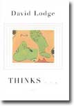

|

|
|
Viking Press
Hardcover, 2001
342 Pages |
I THINK it was Aldous
Huxley who said that man is eternally alone. Try as we might, we simply
cannot get into another's mind. We never truly know just what is going
on there. And, however much we might try, we can never, not truly, let
someone else into ours.
But what about literature?
It's not just a triumph of human achievement. It's centrally preoccupied
by the problem of human consciousness. It explores human thought, and
what it means to be human. Moreover, literature invites us into someone
else's mind to see what they're thinking.
Literary critic Harold
Bloom insisted that such "self-overhearing," as in Shakespeare's
great soliloquies, not only captures the process of self-consciousness,
but also gives us a way of thinking about it. In short, books teach us
about the nature of self and give us a glimpse of humanity.
David Lodge takes
up these vexing issues, often to hilarious results, in his new novel "Thinks
. . ." Lodge is the master of the academic romance, going back to
"Changing Places," where his wit and elegant styling are on
fine display. But what is most remarkable about Lodge, is that he manages
to be so funny while talking about serious ideas seriously. "Thinks
. . ." may be his most ambitious book to date, but it doesn't have
the ease and grace, nor the engagement with the reader, of his best books.
In this one, Ralph
Messenger is a distinguished professor of cognitive science whose work
explores consciousness. He's quite convinced that human consciousness
can be artificially replicated--that there is not anything truly distinct
about it, or for that matter about being human. Messenger is a scientist,
which at one level means he's an utter materialist. He sees humans as
derivative of their biology who cast doubt on anything they might associate
with the soul.
For instance, Messenger
thinks "crying is a puzzler." He hasn't figured out just why,
scientifically speaking, human beings do it. What once useful behavior
is it a modification of?
While Messenger does
indulge his human appetites, for food and sex mostly, they're still biological
urges. Even if he enjoys the particular aesthetics of these two needs,
that doesn't extend to, say, the quality of prose. The world does not
need, Messenger is sure, "another novelist."
Which brings us to
Helen Reedy, a visiting novelist who plays the humanist foil to Messenger's
materialist. Recently widowed, she resists Messenger's advances, at least
at first. He's married, which means something to her. But she still engages
him socially and intellectually.
As Messenger explains
to her "crying is a puzzler," she asks about laughter: "Could
you design a robot that would laugh at another robot's jokes?" And
as Messenger, ever quick to discount "humanness," sees no reason
why not, Helen ventures that she "doesn't believe a machine could
ever feel amused . . . Or happy, or sad-or bored." Aren't these human
qualities based on human emotion and not mere biology?
The battle is joined,
and Lodge, through Helen and Messenger, wrestles with the question of
whether we are elaborate machines or beings with a soul. Lodge doesn't
stack the deck for the novelist, but takes up themes that have preoccupied
his previous novels. He neatly merges form and substance to let us into
the differences of Messenger's and Helen's minds as they each tell different
parts of the story.
Even their methods
of speaking to themselves capture their differences. Messenger dictates
his thoughts into a tape recorder or computer while Helen writes them
in a journal. But each is a way of being as "unconscious" about
consciousness as possible, writing only to capture their thoughts and
not to display them for others.
Messenger's ideas
cast doubt on Helen's thoughts, as she wonders if her inherited ideas
are just that. But Helen pushes Messenger-impervious though he is-to grapple
with novelists and their novels as great ways of getting inside. Henry
James may have much more to teach us about the subject than cognitive
science. As Helen puts it, if rather conveniently, in one of her lectures:
The idea
of the self is under attack today, not only in much scientific discussion
of consciousness, but in the humanities too. We are told that it is a
fiction, a construction, an illusion, a myth. That each of us is 'just
a pack of neurons,' or just a junction for converging discourses, or just
a parallel processing computer running by itself without an operator.
As a human being and as a writer, I find that view of consciousness abhorrent-and
intuitively unconvincing. I want to hold on to the traditional idea of
an autonomous individual self. A lot that we value in civilization seems
to depend on it-law, for instance, and human rights.
Even if this is
only myth, wouldn't it be a myth worth preserving-a noble lie even? And,
it seems, there would be something wonderfully human about that.
Without giving away
the story, a series of events push Messenger and Helen to come to terms
with the distinctness of being human. Amusing, at times profound, Lodge's
"Thinks . . ." is acutally a very humane novel.
- George Thomas
|